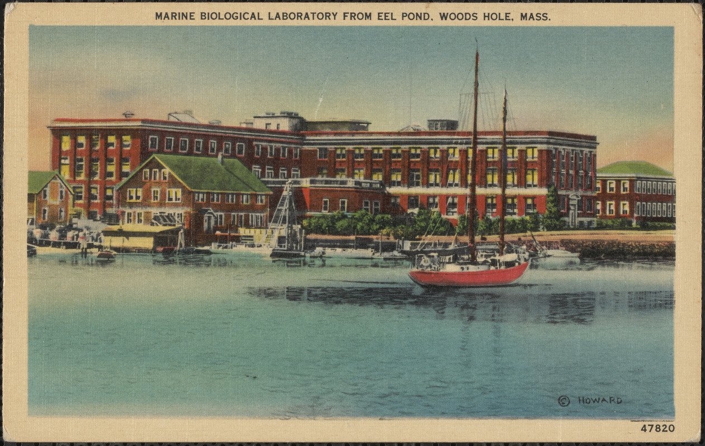
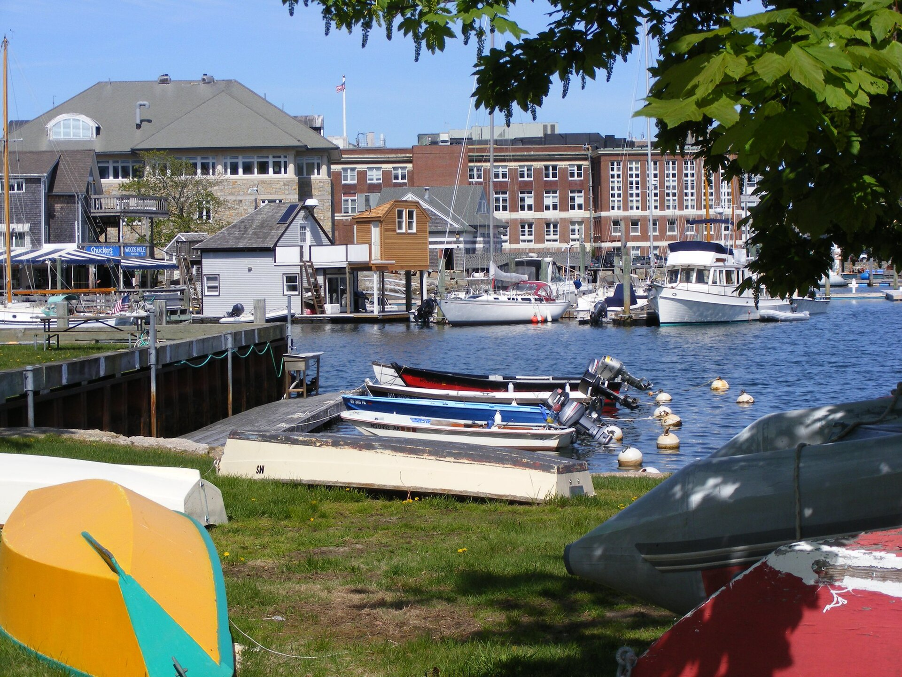
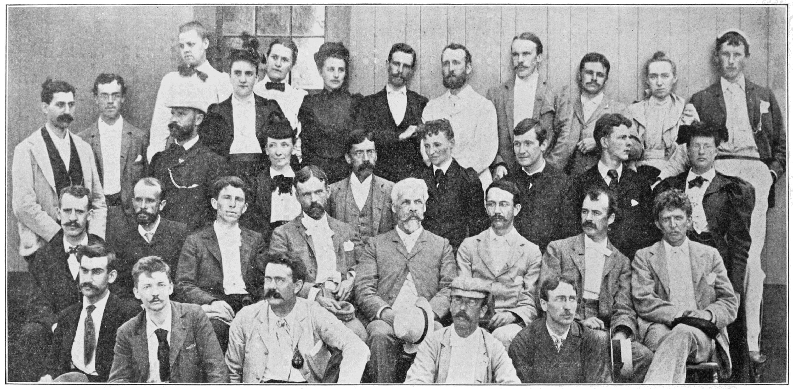
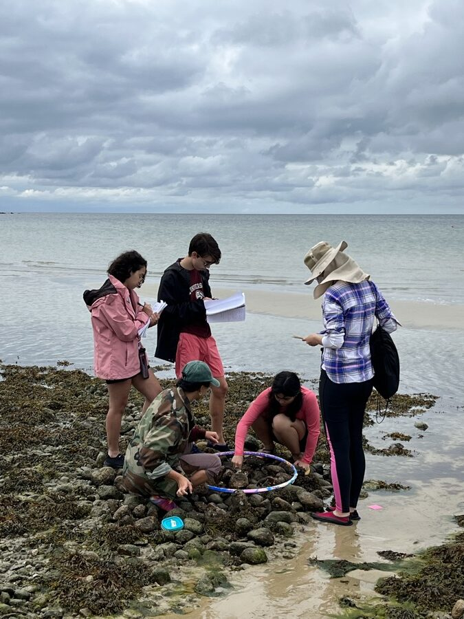
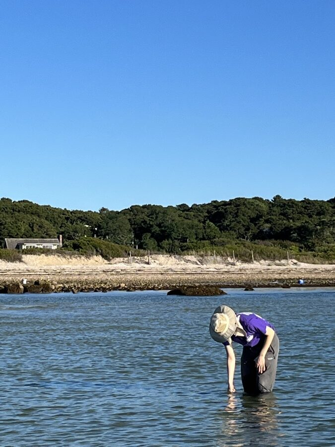
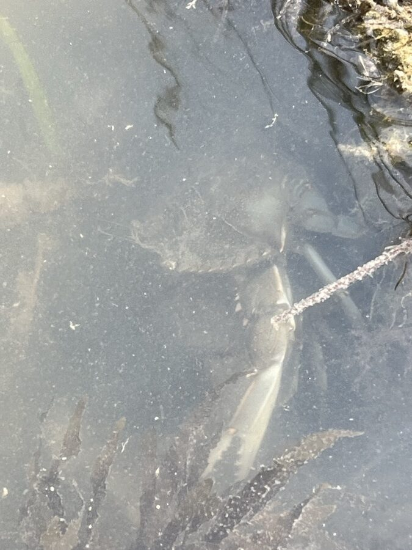
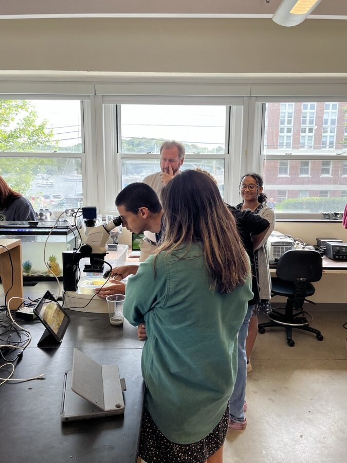
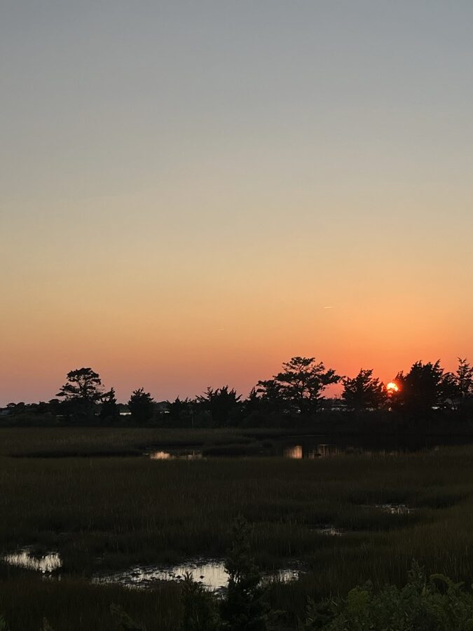
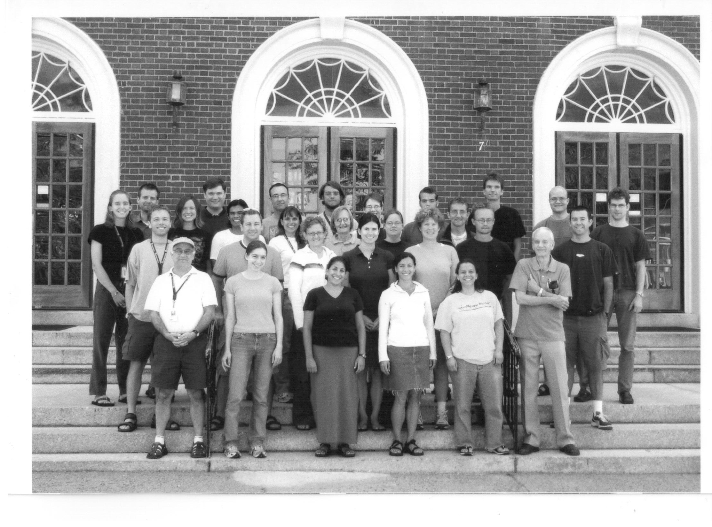

Woods Hole, Mass.
Research and education · Woods Hole, Massachusetts
MBL
The Marine Biological Laboratory brings scientists, faculty, and students together to study living systems in the laboratory and in the field.
Marine Biological Laboratory from Eel Pond · archival postcard
What is the MBL?
The MBL is a private, nonprofit center where researchers and students investigate fundamental biology, biodiversity, and environmental change through year-round research and intensive educational programs.
Founded 1888Open year-round
About the MBL ↗







MBL today
More than 500 scientists and faculty take part in MBL programs each year. Students work with them in courses, laboratories, and field sites around Woods Hole.
Woods Hole
Collection Map
This 2026 student course collection documents organisms gathered at Little Sippewissett Marsh and Wood Neck Beach, then photographed, identified, and organized into specimen records.
The map uses public GPS positions from the iNaturalist observations linked in the specimen spreadsheet.
Open the full Collection Map ↗0 verified iNaturalist observations
Field project · 2026